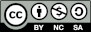

Libros leídos en 2025
Al igual que hice al terminar el año pasado voy a utilizar el blog para dejar por aquí la lista de libros que he leído este año. El 2025 ha sido un gran año lector, de eso no tengo duda. Digo esto, primero por los 45 libros que he leído (nunca había llegado a esa cifra), sino porque también ha sido un gran año de descubrimientos y redescubrimientos en lo que a autores se refiere.
Voy a empezar mencionando los destacados del año marcados todos ellos en la lista con una ⭐. En primer lugar, Theodoros de Mircea Cărtărescu. Descubierto gracias al continuo resonar en los últimos meses como un claro candidato al nobel y con el que he alucinado. Es una de esas obras de las que se hablará durante décadas porque lo contiene todo. De ahí salté a Abel de Alesssandro Baricco. Había oído mucho hablar de Baricco pero nunca había leído nada sobre el y que voy a decir. Ahora necesito leer mucho más de este hombre después de conocer este libro. Lo devoré en apenas una tarde y sin embargo tiene una profundidad como la de un gran iceberg. Siddhartha y Horizontes perdidos han sido marcados quizás por la influencia que últimamente está teniendo en mí todo lo relacionado con el budismo. El primero de ellos ya lo había leído hace años pero ha sido ahora, en una segunda lectura cuando he extraído de el muchos mensajes interesantes. De Retorno a las estrellas de Lem ya he hablado algo en un artículo anterior. Es un libro de múltiples capas y donde el autor nos invita a reflexionar en cada una de ellas. Para mi sigue detrás de Solaris pero igualmente me ha parecido un gran libro.
Sigo ahora con otros descubrimientos que me han dejado un buen sabor de boca. Por empezar en orden está Aguamala como libro curioso, con una narrativa muy original y con una ambientación realista/fantástica en un Napoles actual. Algo parecido me ha pasado con Temporada de huracanes donde además tenemos una prosa puramente mexicana que aunque me pareció algo difícil de seguir al comienzo acabó siendo una delicia. Los árboles de Percival Everett es otro de estos que me dejó totalmente atónito. Tienes una historia puramente sureña, de tintes muy arquetípicos, con hombres negros muriendo y agentes del FBI foráneos entrevistando a una población local sacada de un comic de Predicador y a todo esto se le suma un giro final que es imposible que nadie vea venir. La invención de morel es un relato largo (o historia corta) que te deja también un buen tiempo pensando sobre su curioso argumento. Si eres fan de Perdidos no puedes dejar de leerla. Para terminar con esta lista de descubrimientos menciono a La gloria de los niños de Luis Mateo Díaz. Lo compré de segunda mano y lo dejé olvidado en el estante pensando que sería una historia más del Madrid de postguerra y nada parecido, o si ... Un libro del que destacaría sobre todo que es bonito. Con una historia tan dura como entrañable y con un toque de originalidad que lo hacen difícilmente olvidable.
Debo mencionar también a los viejos conocidos a los que sigo volviendo y que nunca defraudan: el tercer volumen de las obras completas de Lovercraft, editadas por Edimat o la cuarta entrega de la saga de la Torre Oscura de Stephen King. Mención aparte se merecen Los diablos de Joe Abercrombie, una nueva saga fantástica de este genio del género donde vuelve a hacer lo que mejor sabe: recocinar personajes arquetípicos clásicos y convertirlos en memorables. Steinbeck, otro de mis autores norteamericanos de referencia también tuvo su lugar este año con El autobús perdido, el que creo que era su único libro en español que todavía no había leído.
Antes de terminar debo mencionar que este fue el año donde conocí a Michel Houellebecq. Solo había oído hablar de este polémico autor en medios y redes y ahora puedo entender todo el revuelo que causa en torno a su obra. Leí sus dos primeras novelas publicadas y tengo que reconocer que no me han gustado. La segunda todavía menos que la primera. No quiero extenderme en el tema pero me gustaría tener ganas en un futuro próximo para escribir algo sobre el dando una opinión algo más desarrollada.
Termina 2025. Un año en lo personal con muchos más bajos que altos para mi y no puedo evitar alegrarme de darle carpetazo y pasar a otra cosa. Olvidando lo malo, este año el blog cumple cuatro añitos lo que supone un pequeño motivo para estar contento. Así que sin más que añadir, me despido no sin antes ¡felicitaros a todos unas muy felices navidades! Os dejo la lista completa de mis lecturas por si encontráis algún título que os es conocido o familiar y queréis hacerme algún comentario:
- Paralelo 42 — John Dos Passos
- H.P Lovercraft. Obra completa. Volumen III — H.P Lovercraft
- Aguamala — Nicola Pugliese
- Ampliación del campo de batalla — Michel Houellebecq
- Sobre héroes y tumbas — Ernesto Sábato
- ⭐ Theodoros — Mircea Cărtărescu
- La Metamorfosis — Franz Kafka
- El doble — Fiódor Dostoyevski
- ⭐ Abel — Alessandro Baricco
- Temporada de huracanes — Fernanda Melchor
- Las partículas elementales — Michel Houellebecq
- El arte de la ficción — David Lodge
- El autobús perdido — John Steinbeck
- Los detectives salvajes — Roberto Bolaño
- Cuando todo se derrumba — Pema Chödrön
- Por qué meditar — Daniel Goleman
- La pasión de Fausto Coppi — William Fotheringham
- Adiós, señor Chips — James Hilton
- Como meditar — Pema Chödrön
- Caperucita en Manhattan — Carmen Martín Gaite
- El proceso — Franz Kafka
- Lobos del Calla. La Torre Oscura V — Stephen King
- ⭐ Siddhartha — Hermann Hesse
- El orden del tiempo — Carlo Rovelli
- Los árboles — Percival Everett
- ⭐ Horizontes perdidos — James Hilton
- Budismo para principiantes — Thubten Chodron
- Nápoles 1944 — Norman Lewis
- La Presa — Kenzaburo Oé
- Vida contemplativa — Byung-Chul Han
- Los vagabundos del Dharma — Jack Kerouac
- ⭐ Retorno de las estrellas — Stanisław Lem
- Operación Dulce — Ian McEwan
- La invención de Morel — Adolfo Bioy Casares
- Los papeles de Aspern — Henry James
- Una habitación con vistas — E.M. Forster
- Guia para meditadores — Cortland Dahl
- De qué hablamos cuando hablamos de amor — Raymond Carver
- La Odisea — Homero
- Meditaciones — Marco Aurelio
- La isla de Arturo — Elsa Morante
- Los diablos — Joe Abercrombie
- La gloria de los niños — Luis Mateo Díez
- El poder de la atención — Nyanaponika Thera
- Gente Independiente — Halldór Laxness
Diciembre 2025